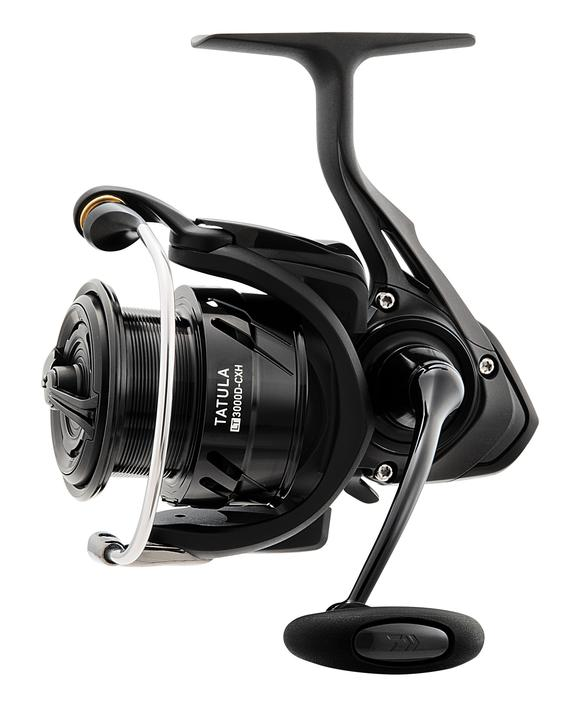

ReelCalc Reel Setup Guide
Daiwa Tatula LT 2500D-XH Line Capacity & Reel Setup Guide
The original Tatula LT 2500D-XH is a useful size to consider for bass finesse and general freshwater spinning. Its 6.2 oz weight, ZAION frame and listed 34.5-inch retrieve balance light handling with quick line pickup. Daiwa rates it for 210 yards of 10 lb mono. Choose your actual line below to estimate a refill with or without backing; this guide covers TALT2500D-XH, not Tatula MQ.